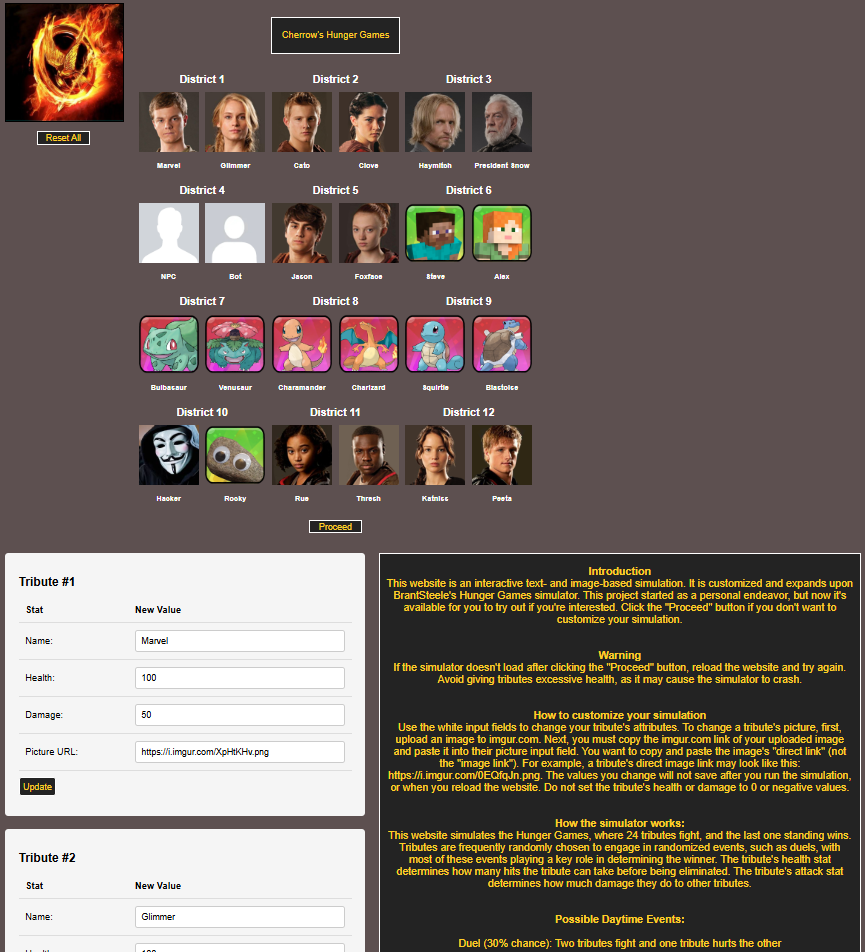
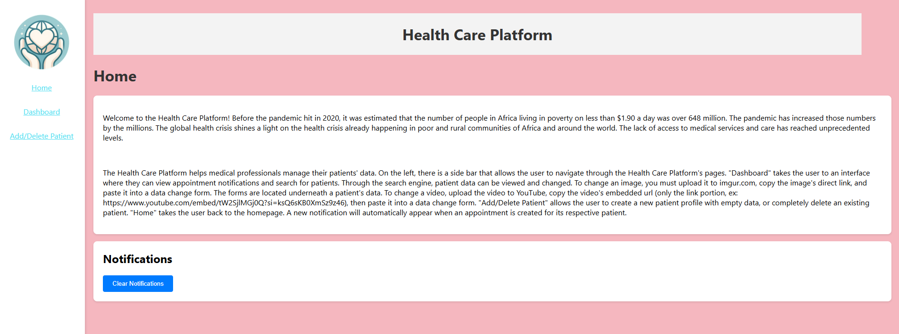
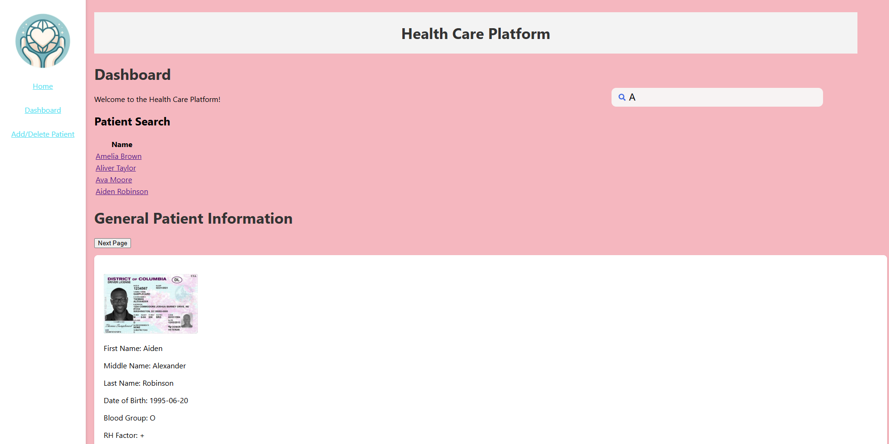
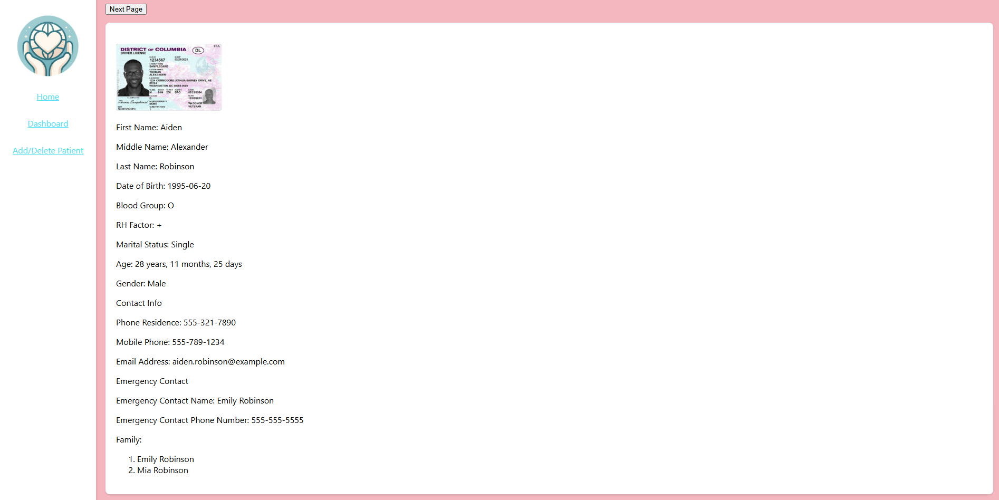
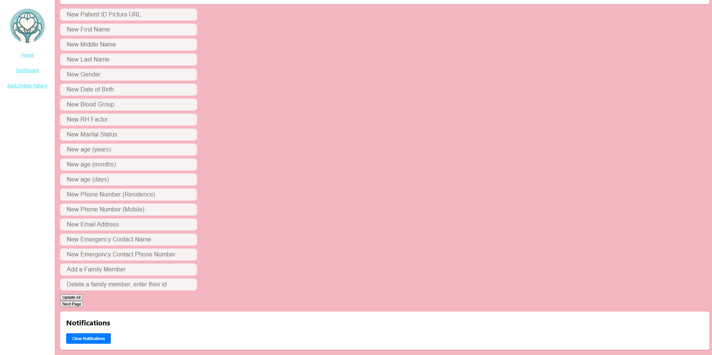
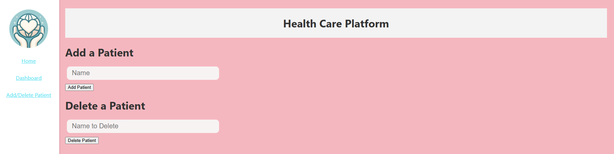

Hi, welcome to my personal website! I'm Brendan Wong, a college student at California State University, Sacramento, who studies computer science. I believe in the "less is more" philosophy when it comes to programming. Inspired by this mindset, I designed this site to be as clean and straightforward as possible.
Here, you'll discover more about me, the unique projects I've created, and the valuable skills I've gained through my experiences. I believe the best way to showcase my growth and knowledge in computer science is through my projects. In each project, I provide insights into the development process, the challenges I overcame, and the practical value of my work.
I made a text- and image-based simulation that allows users to recreate the Hunger Games in their browser, developed with HTML, CSS, and JavaScript as languages, React as a framework, and GitHub Pages for deployment. This began as a personal project, but I decided to update and publicise it so others could try it out. It's original purpose was to entertain myself, but now others can join in on the fun.
You can check out my project here:
Cherrow's Hunger Games
Simulator
It is hosted on my second GitHub account. Cherrow is one of the usernames I use to stay anonymous
online.
The Hunger Games is a popular trilogy of novels written by Suzanne Collins, where contestents (tributes) fight in a large arena full of treacherous terrain, until only one is left standing. Inspiration for this project began while I was playing with a Hunger Game simulator hosted at brantsteele.net. It puts 24 tributes in an arena and they participate in randomized events, until a winner is chosen. Here is a link to the original simulator created by the Brantsteele staff: Brantsteele's Hunger Games Simulator. It's one of my favorite websites, but I didn't like how some features were designed:
To solve these problems, I decided to customize and expand their simulator by recreating it from scratch. Here is what the homepage looks like:
24 tributes compete in the Hunger Games, with 2 characters in each of the 12 districts. A common misconception is that tributes in the same districts are always teammates, but this isn't true because there can only be one winner. My simulator's appearance is similar to Brantsteele's style, but mine is a lot more simplistic. The middle of the website displays every tribute's name and profile picture. Users can edit these through the use of the white input boxes found at the bottom of the website. Next to the input boxes, users can read a full tutorial on how to use my website, and how it works internally. Near the top left corner, there is a reset button. When pressed, all tribute names and profile pictures are reset to the default ones I have provided. Underneath the grid of tributes, there is a proceed button that begins the simulation.
Here is an example of what the simulation could look like:
Tributes participate in randomly chosen events until only one is left standing. A tribute is eliminated when their health drops to 0. Tributes have an attack stat, which determines how much health they can remove from others. There are many different kinds of events, and most of them will change the outcomes of future events. Some events that do nothing, increasing the randomness of the simulation. Here are some examples:
My website is not perfect, and there are many limitations. I didn't want to spend money on hosting my website, so I learned how to deploy it for free on GitHub Pages. However, GitHub Pages only hosts static websites for free, so I am unable to allow users to store their custom tributes' information. Users must recreate their custom tributes every time they reload or come back to my website. In addition, users aren't able to create their own events, or edit the default ones. Originally, I designed my website without the intentions of letting other people use it, so I have not implemented the ability for users to edit events without changing the source code. In the future, I might add this feature.
I faced many challenges while developing this project. One issue I faced was figuring out how to minimize violence without taking away from the user's experience. The Hunger Game novels are violent, so it was difficult finding a balance between reducing violence and recreating the conflict that makes the books popular. In fact, I am only showcasing the second version of my simulation. The first version is too violent, so I had to rewrite a large amount of code. However, I wanted to keep the first version intact, and you can see it by clicking this link. Viewer discretion advised: Cherrow's Hunger Games Version 1. Another issue I faced was concealing my identity online. Projects hosted on Github Pages are open source, so anyone can read the source code and find who the author is. I shared my project with many strangers online, and I don't want my personal information to be known. I decided to create multiple GitHub accounts to stay anonymous, although managing multiple accounts can get complicated.
I created a mod for the popular video game called "Minecraft", introducing new gameplay features that extend and integrate with the existing codebase. Minecraft is a sandbox game where players set their own goals in an infinite 3D world made of blocks. Modding video games can be challenging, and Minecraft is no exception. I make mods for Minecraft Java Edition, which is only availible on PCs. The mod is written entirely in Java, as it is the primary programming language Minecraft runs on. Not only does a mod developer need to know how to code in Java, but also needs to learn how Minecraft works internally.
In Minecraft, players can mine and collect copper ore. Copper ore is common and can be smelted into copper ingots. Copper is used to make building blocks and very few items like lightning rods and spyglasses. However, many players think copper has a lot of missed potential. The most common complaint is that copper is boring and you can't craft very many cool items with it, like armor or tools. Meanwhile, you can craft all sorts of fun items with iron ore, like armor, tools, anvils, railways, etc. To address this problem, I decided to create a Minecraft mod which makes players want to mine as much copper as possible to try new features I added to the game.
You can check out the source code for my project here:
Useful Copper Repository
It is saved on my third anonymous GitHub account.
If you are a Minecraft player and know how to install mods, you can download the .jar file for my mod
from google drive.
Otherwise, you should ignore this google drive link and continue reading. My mod is for Minecraft Fabric
version 1.20.1.
Useful Copper Download
Here are the most notable features I have added:
Many players wishs you could turn copper ingots into armor, especially since all other metallic ores can be turned into armor. Since copper can be found in the early game, I decided to make my copper armor very useful for players who haven't progressed much. Both copper and iron armor can be crafted early into the game, and I didn't want one armor to overshadow the other. I decided to make copper armor give less protection than iron armor, but it gives players a permanent speed boost (speed 1) when the full set is worn. Copper armor is unique because no other armor set in the game buffs the player's speed. This allows for both copper and iron armor to be useful, and the player can choose which one they would like to use. Copper armor becomes less useful in the end game because players can use speed potions to increase their movement speed, and they wear netherite armor, which gives more protection than both copper and iron. From a gameplay perspective, I think my copper armor fits perfectly into Minecraft.
In recent updates, Minecraft added the mace, a weapon that is too overpowered. A player can one shot any enemy by hitting them with the mace, if the user falls for a little while. The mace deals too much damage, and it can make some fights feel unfair. My solution to this problem is to create my own version of the mace that is equally as fun to use as the current mace, but more balanced. The copper mace looks similar to the normal mace, but it looks like it's made of copper rather than steel. In my opinion, my copper mace's design makes more sense because maces are found in trial chamber dungeons. Trial chambers are full of copper blocks, and the blue handle represnets the breeze rods found in trial chambers. Hitting an enemy with the copper mace normally does 3 hearts of damage, but if you have some downward velocity, it deals 8 hearts of damage. Compared to the hundreds of hearts the normal mace can deal in a single blow, I think the copper mace is much more balanced. I added an aoe attack to the copper mace, so when an enemy is hit with downward velocity, other enemies around it also take 8 hearts of damage. The copper mace breaks blocks around the enemy when hit, and has an explosion particle effect. To make the copper mace more practical and fun to use, whenever a player holds it, they can jump significantly higher. This allows players to easily gain downward velocity, but it doesn't work well in tight spaces like caves. The copper mace is useful outside of fights because players will be able to jump higher, and this is great for peaceful activities such as building. The materials required to craft this item can't all be found in the early game because I think a newer player shouldn't have access to this weapon so soon.
Many players wish copper tools were added to the game. However, there's already a lot of pickaxes, axes, shovels, and swords in the game, and I wanted to create something more unique and memorable than a standard set of tools. I like chopping down trees and collecting wood in Minecraft, but I've always felt like the best axes in the game weren't fast enough for me. I decided to add the copper chainsaw, which breaks wood blocks instantly. With the copper chainsaw, the player doesn't have to break wood manually anymore. Players have to hold left click while using an axe to break blocks, but once a player turns on their copper chainsaw, they can simply look at the blocks they want to remove, and the chainsaw instantly breaks it for them. This can be quite overpowered, so I decided to make more difficult to craft than a netherite axe, the best axe in the game. One of the items required to craft it (the wither star) is only dropped from a boss. I made sure the copper chainsaw didn't completely outclass axes by making it weak in pvp. Axes can break shields and deal high amounts of damage, while the copper chainsaw doesn't. To make the item feel more polished, I added an animation to it whenever it is turned on. Pressing right click turns the item on and off.
I added copper nuggets to this mod. Copper ingots can be converted to copper nuggets, and vice versa. They are used for crafting recipes, but they don't do anything special. Iron and gold nuggets exist in vanilla Minecraft, so I think it makes sense to add copper nuggets.
I have also began working on some unfinished features that are not included in my useful copper mod yet, but I wanted to share them.
This is the thunder blade, it prevents an enemy from moving for a decent period of time. However, the thunder blade deals very low damage.
I have always wanted to design my own dimension in Minecraft. I created copper portal blocks that allow you to travel to my custom dimension. Someday, I may add custom dungeons and mobs to my dimension.
Some may assume that modding a video game is easy simply because it's a video game. You could just sit down, open up Minecraft, write some code, and finish making a mod. However, it's not that easy. Before you even start learning how to mod in Minecraft, you have to learn how to code in Java. Thankfully, I began coding with Java when I took AP Computer Science in 11th grade. I started learning how to mod by watching a YouTuber named Kaupenjoe. Here is a link to his YouTube channel: Modding By Kaupenjoe. In my opinion, this is the absolute best way to start your modding journey, especially if you already know how to code in Java but have no idea how to make a mod. I decided to give Minecraft modding a try because I would be able to learn a lot about programming while working with my favorite video game. I proceeded to watch Kaupenjoe's 1.20.1 fabric modding tutorial playlist and practiced creating mods for about a month. It was extremely difficult, but after dozens of hours I eventually figured out how to create mods without copying and pasting Kaupenjoe's code word for word. I use a mod loader called "Fabric" along with the Fabric API. They allow me to edit Minecraft's source code and add my own code to the game. You can learn more about Fabric here: Official Fabric Wiki.
Below is an example of what adding code to Minecraft would look like. This is my copper mace's code:
Below is an example of what editing Minecraft's source code would look like. This is called a "mixin", where you inject code into an existing method. This mixin changes the player's arm positions when they hold my copper chainsaw:
My project is not meant for the latest version of Minecraft, and some items don't exist in previous versions of Minecraft like the normal mace. Someday I may update my mod to the latest version, but lots of code will have to be rewritten.
I collaborated with 5 other classmates and my teacher in my CSC131 class to develop a healthcare application to met a client's requirements, allowing healthcare workers to view and manage their patient's data, satisfying the client's needs. I built most of the frontend with HTML, CSS, JavaScript, and React. This group project spanned over the majority of my team's spring semester in 2024.
The source code for our project can be found here:
Healthcare Platform
It is saved on my classmate's GitHub account.
My teacher, Ahmed Salem, found a client who wanted an application that helped healthcare workers easily access patient information and appointments from anywhere on their device. It helps workers keep better track of their patients and adjust any of their information as needed at any time. Apparently, he found a client who was in charge of a health organization in Africa, but there was no proof that this client was real. In fact, my class was supposed to meet with this client on zoom occasionally, but the client never showed up. Although our client may have not been real, our project was still a good learning experience.
We ended up creating a website because all of us already knew Java, and didn't want to learn too many new coding languages. The frontend is written in HTML, CSS, and JavaScript, and React is used as a framework. The backend is written in Java, and Spring Boot is used as a framework. The database is managed using MySQL.
I already knew HTML and CSS, so I decided to help create the frontend with one other classmate. Our team's leader worked on both the backend and the MySQL database. The other group members worked on different layers of the backend.
Here is what the homepage of our healthcare platform looks like:
The homepage explains to the user what the purpose of the healthcare platform is. It explains how to upload images and videos if the user doesn't want to edit the source code or add images to the database directly. The sidebar on the left allows users to access more features. Notifications are added to the notification box whenever an appointment is created.
Here is what the dashboard looks like. You can search for patients using the search bar. Once you search for a patient, you can click on their link and view their information in the dashboard:
  If availible, you can click the "Previous Page" and "Next Page" buttons to see more patient information.
Here is an example of what data a patient's profile may contain:
When you click on the "Add/Delete Patient" link in the sidebar, this is what it looks like:
To add a patient, type their name into the input box, press the button below it to submit, and a patient with no information has been created. Patient information can be added in the dashboard. Deleting a patient works in the same way, type their name into the input box and they will be removed.
My group faced many challenges, and we didn't overcome all of them. Our previous classes haven't prepared us to create a full stack application. For the frontend, I had to learn JavaScript and React in a short amount of time so I could catch up with my teamate. In the end, our frontend was able to accomplish what the client asked for, except for some issues with cybersecurity and the database. None of us knew anything about cybersecurity and we didn't have time to learn how to secure our application, so we decided to let the client take care of worker account creation and logins. For the database, it can't be used anymore because I can't seem to find the MySQL dump file required to create it on GitHub or on my PC. I couldn't find it in my group's chat messages either because they were deleted. I did take safety precautions and added mock patient data to the frontend in case our backend didn't work. Without the backend, everything except saving data works in our application. 3 group members were responsible for the Java Spring Boot backend, but I think they ran into a lot of issues. None of us have ever used Spring Boot before, so I don't think they had enough time to make it correctly.
Although our healthcare platform was made poorly, we still got a decent grade because the frontend was usable. I've learned important soft skills while working with my classmates. I became better at teamwork, problem solving, and learning new technologies fast.
If you really want to try using our project, the instructions can be found in its readme files on GitHub. Only the frontend is functional.
I created this website so I could talk about me and my projects more. I wanted to explain how I developed my projects in greater detail, without cluttering my resumes.
You can look at the source code of this website here: Brendan's Portfolio.
Some programmers assume complicated and lengthy code is good because it makes you look more intelligent. However, I decided to use as few tools as possible to create a simple project. This website only has one HTML file, one CSS file, many .png files, and some .mp4 files. I've learned that it's most efficient to only use the necessary tools needed for a project.